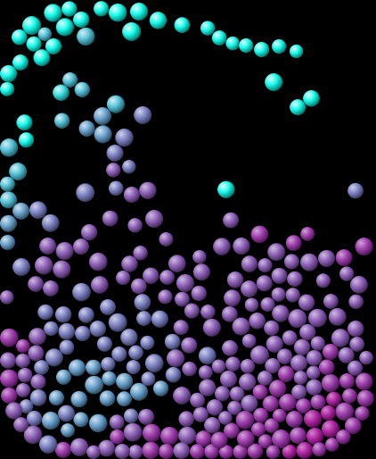
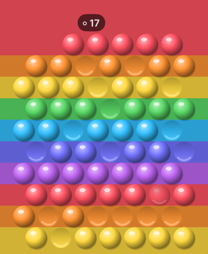

Little apps, made in an attic.
Small, hand-made apps for Apple Watch and iPhone, by Paul Messenger.
Watch Toys
Fifteen tactile toys and tiny games for Apple Watch: steel balls, fireworks, bubble poppers, smoke, mazes and more, all with haptics you can feel.


More apps on the way.